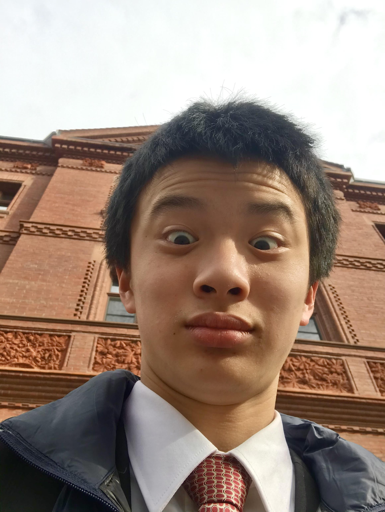

My Origin Story
I didn’t even know what a clarinet was until the moment I decided to play it. In the 4th grade, I was shown a demonstrative video of wind instruments as part of an effort to recruit students to the band. One line caught my attention: “the clarinet has the widest range of all woodwinds.” Something about being able to play more notes than everyone else appealed to me, and I’ve stuck with the clarinet ever since. I don’t think I was particularly good at it early on; I was also playing piano and viola then, and I lacked the time and dedication to perfect all of them. It didn’t help that an amateur clarinet sound is positively hideous, and practicing it came at the expense of my family’s sanity. With persistence, however, I found that I could produce incredible timbres and overtones unique to the clarinet. The rich, chocolatey texture is probably what I love most about the instrument.
I have two people to thank: my clarinet teacher, Jessica Popik, and my middle school band director, Karen Forrest. These mentors encouraged me to push my boundaries to the limit, and I wouldn’t be where I am today without them.
District and All State
I have participated in the Central District Music Festival since 7th grade and was fortunate enough to be a part of the Massachusetts All-State festival in my freshman year: one of my most memorable experiences to date. The guest conductor, Glen Adsit, was a truly charismatic person; he touched every one of the 100+ musicians in the hall with his enthusiasm and cultivated a sense of community between us. He was particularly fond of a composer friend of his, David Maslanka, the music of whom helped him develop a deeper sense of spirituality during his battle with cancer. Adsit had the opportunity to meet personally with Maslanka, and he recovered from his illness soon afterward. Our closing piece, as he informed us, was a token of gratitude and a tribute to his friend’s death.
We performed at Symphony Hall after 3 consecutive days of nonstop practice. Seeing Prof. Adsit cut off the final chord of Maslanka’s “Give Us This Day” gave me a profound feeling of exhilaration that I doubt I will ever recreate. I returned to the All-State Festival again in sophomore year, but the virtual experience was nowhere near as exciting as the real thing.

Claflin Hill
I played in the Claflin Hill Youth Wind Ensemble from 2017-2020. I was generously offered a seat on my first audition by the director, Paul Surapine, who evidently believed he could “whip me into shape”—for lack of a better term. The experience was uncharted territory for me: the expectations were high, the music was difficult, and the other musicians were several heads taller than me. Admittedly, I was quite lost for the entire first year. I struggled to play through tough passages despite practicing for hours, while the rest of my section seemingly breezed through entire pieces on the first read. The concertmaster was particularly formidable—his technique and intonation were unmatched, and he served as a role model for me.

Claflin showed me a beauty in music that I had never encountered in the cacophony known as middle school band. I used to believe that music was a procedure—a methodical practice in which playing the right notes and rhythms corresponded to checked boxes on a rubric. After joining CHYS, I practiced so that I might play like the concertmaster whom I looked up to so intently. I grew rapidly, and in my third year I rose to take the 1st chair after my idol graduated.